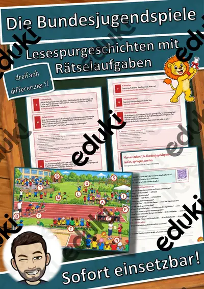

Trickfilm und Daumenkino – wie Bilder laufen lernen – Lesespurgeschichte mit Rätselaufgaben (Klasse 6)
Trickfilm und Daumenkino – wie Bilder laufen lernen – Lesespurgeschichte Kunst (Klasse 6)Begib dich mit deiner Klasse auf eine spannende Lesespur durch ein Filmhaus! Nova und Ruben machen einen Trickfilm-Workshop und finden heraus, wie aus unbewegten Bildern Bewegung wird: Im Foyer erfahren sie, dass jeder Film aus vielen Einzelbildern besteht, an der Wundertrommel galoppiert ein gezeichnetes Pferd, und in der Daumenkinoecke zeichnen sie ihr erstes eigenes Daumenkino. Am Zeichentisch lernen sie Schlüssel- und Zwischenbilder kennen, im Knetstudio die Stop-Motion-Technik, am Legetrickplatz den Legetrick, an der Storyboardwand die Planung eines Films, im Kulissenraum die Bedeutung von Licht und Hintergrund und im Tonstudio die Kunst der Geräuschemacherei. Ihre Knetfigur Knetti ist immer dabei. Am Ende jedes Abschnitts verrät ein Hinweis den nächsten Ort auf dem Hausplan – nur wer richtig liest und mitdenkt, findet den Weg und sammelt alle geheimen Buchstaben zum Lösungswort.
Die perfekte Lesespur für den KUNSTUNTERRICHT der 6. Klasse – ideal als Einstieg vor einem eigenen Trickfilmprojekt: Sie verbindet motivierendes, sinnentnehmendes Lesen mit Grundwissen zu bewegten Bildern und Medien. Das Material ist SOFORT EINSETZBAR und in DREI DIFFERENZIERUNGSSTUFEN (leicht ★ / mittel ★★ / schwer ★★★) angelegt.WICHTIG: Das komplette Material ist sowohl in FARBE als auch in SCHWARZ-WEISS enthalten – ideal zum Sparen von Druckkosten.DAS IST ENTHALTEN
- Lesespurgeschichte in 3 Niveaus (leicht, mittel, schwer)
- farbiger Hausplan als Suchkarte
- Hörverstehen mit QR-Code zur MP3 (selbstständiges Hören mit Kopfhörern)
- vier Aufträge auf dem Weg: ein Verbinde-Rätsel, ein Quiz, eine Rechenaufgabe und ein Steckbrief
- Rätselseite (Wörter-Suchsel + Wissensfragen)
- Ausmalbild zum Thema
- ausführliches Lösungsblatt für die Lehrkraft
- alles zusätzlich als komplette Schwarz-Weiß-VarianteSO GEHT DIE LESESPURDie Kinder lesen ab START, entnehmen dem Text einen Hinweis auf einen Ort im Filmhaus, suchen ihn auf dem Plan und lesen bei dieser Station weiter. An jeder richtigen Station gibt es einen Sammelbuchstaben. Eingebaute Sackgassen (Popcornstand, Garderobe, Technikraum, Kassenschalter) gehören zwar zum Filmhaus, sind aber keine Stationen und dienen der Selbstkontrolle. Am Ende werden die gesammelten Buchstaben umgestellt und ergeben ein geheimes Lösungswort. (Die Lösungen sind selbstverständlich nur im Lösungsblatt für die Lehrkraft enthalten.)INHALTLICHER SCHWERPUNKTDie Kinder verstehen, wie aus schnell aufeinanderfolgenden Einzelbildern Bewegung entsteht, lernen optische Spielzeuge und das Daumenkino kennen, unterscheiden Zeichentrick, Stop-Motion und Legetrick, planen mit dem Storyboard und erfahren, warum Kulisse, gleichmäßiges Licht und Ton für einen Trickfilm wichtig sind.ABGEDECKTER LEHRPLAN (Klasse 6, Kunst)
- Kunst (LehrplanPLUS Bayern) – Klasse 6 „Bewegte Bilder – Trickfilm“: verstehen, wie aus Einzelbildern Bewegung entsteht, optische Spielzeuge und Daumenkino kennen, Zeichentrick, Stop-Motion und Legetrick unterscheiden, einen Trickfilm mit dem Storyboard planen sowie Kulisse, Licht und Ton gestalten.
- Deutsch – Lesen mit Texten und Medien umgehen: Lesestrategien anwenden, Texten gezielt Informationen entnehmen, sinnentnehmend und selektiv lesen; Zuhören: einem Sachhörtext konzentriert folgen (Hörverstehen mit MP3).
- Mathematik – Rechnen im Sachzusammenhang (Bilder pro Sekunde).
- Fächerübergreifend / Kompetenzen: Medienbildung, Physik/Biologie (Wahrnehmung), genaues Lesen und Prüfen, kreatives Gestalten (Ausmalbild).
Geeignet für Freiarbeit, Stationenlernen, Vertretungsstunden, Wochenplan, Projekttage und Homeschooling. Klassenstufe 6 (differenziert einsetzbar auch in Klasse 5 und 7).
Ähnliche Materialien

Die Bundesjugendspiele – laufen, springen, werfen – Lesespurgeschichte mit Rätselaufgaben (Klasse 3)

Skilanglauf und Biathlon – gleiten, laufen, zielen – Lesespurgeschichte mit Rätselaufgaben (Klasse 8)

Laufen im Gelände – Crosslauf im Herbst – Lesespurgeschichte mit Rätselaufgaben (Klasse 7)

Pferde Lückentext mit Wortspeicher Hörverstehen und Suchsel

Peter Paul Rubens Lückentext mit Wortspeicher Hörverstehen und Suchsel

Das Pferd – Lesespurgeschichte mit Rätselaufgaben (Klasse 5)

Film Lückentext mit Wortspeicher Hörverstehen und Suchsel